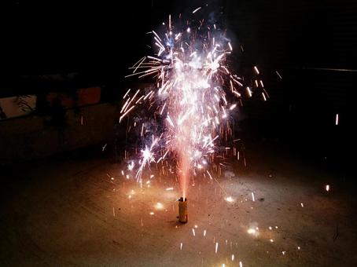

花火とは
花火とは、火薬類を燃焼・爆発させ、光(色)、音、そして煙を発生させるもので、 現在では一般的な鑑賞に用いられるほか、合図や信号としても使われます。 花火大会などで使用される花火の種類は、大別すると「打ち上げ花火」と「仕掛け花火」の2種類ですが、 さらに光・色彩・形・音を主とする夜花火と、煙・音を主とする昼花火とに分けることができます。 また、一般家庭で使用される花火は「おもちゃ花火」と呼ばれ、花火の大きな分野となっています。
おもちゃ花火
おもちゃ花火の種類にはどのようなものがあるでしょうか？ 打ち上げ花火、噴出花火(ドラゴン)や手持ちの花火、ロケット花火、 線香花火、爆竹あたりはメジャーですね。その他にもたくさんの種類がありますので、 ぜひご参照してみてください。ウンチク王の第一歩です。
おもちゃ花火の種類
- 手持ち花火
- 線香花火(手持ち花火)
- 打ち上げ花火
- 噴出花火
- ロケット花火
- 昼用花火
